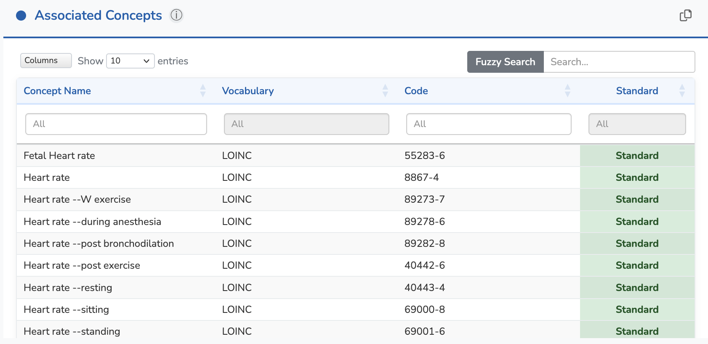
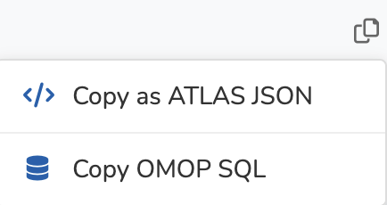
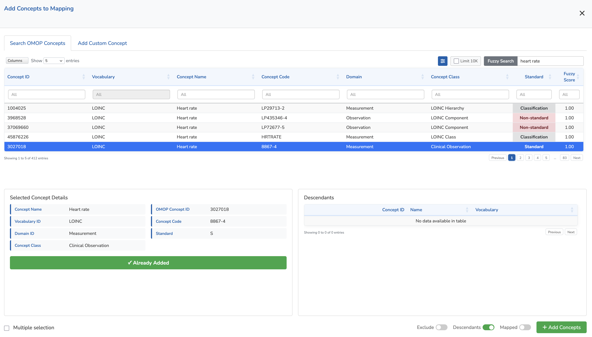
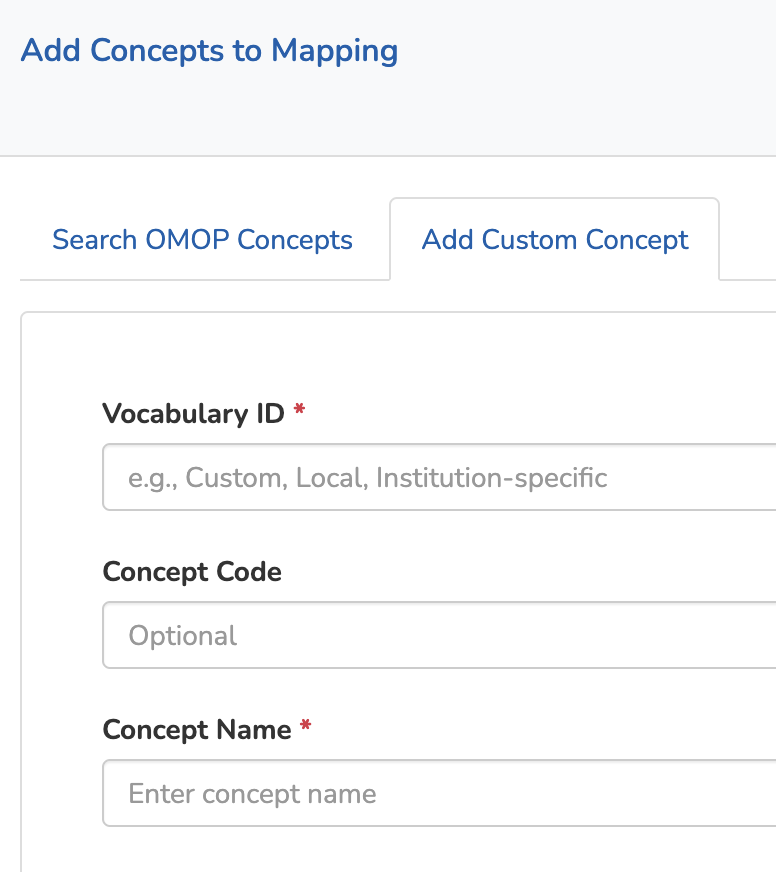
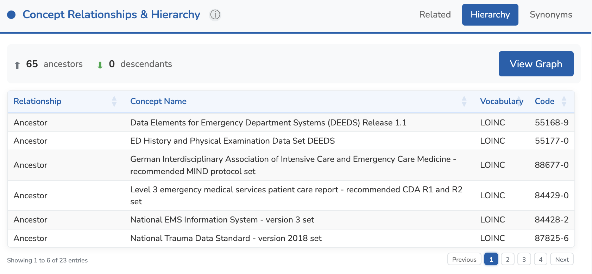
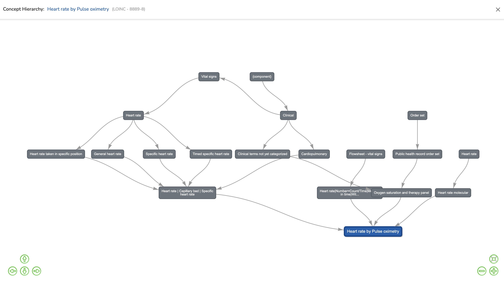

General Concept Details
When you select a general concept from the General Concepts list, you enter the detail view. This page displays comprehensive information about the selected general concept, organized in a four-panel layout.

Page Layout Overview
The detail view is divided into four quadrants:
- Top-Left: Associated Concepts — Specific terminology concepts (LOINC, SNOMED, RxNorm) linked to this general concept, with their OMOP Concept IDs
- Top-Right: Selected Concept Details — Detailed metadata about the currently selected concept from the Associated Concepts table
- Bottom-Right: Concept Relationships & Hierarchy — Related concepts, hierarchical position, and synonyms from OMOP vocabularies
- Bottom-Left: Comments & ETL Guidance — Expert comments and statistical distribution information to help with data alignment
1. Associated Concepts (Top-Left)
This panel displays all terminology concepts associated with the selected general concept. These are specific codes from standard vocabularies (LOINC, SNOMED CT, RxNorm, ICD-10) that have been mapped to this general concept.
Table Features
- Column Visibility — Click the Columns dropdown at the top-left of the table to show or hide specific columns
- Column Filters — Use the text fields at the top of each column for exact matching
- Fuzzy Search — Use the fuzzy search input for approximate matching on concept names
- Row Selection — Click on a row to select it. The Selected Concept Details and Concept Relationships panels will update to show information about the selected concept
Copy Options
The Copy button at the top-right of the table provides export options:
- Copy as ATLAS JSON — Copies the concept set in ATLAS JSON format. This format is compatible with OHDSI ATLAS concept sets
- Copy OMOP SQL — Copies a SQL query that includes all associated concepts for this general concept
Edit Mode
When you enter edit mode by clicking Edit page in the top-right corner, the action buttons change to:
- Fullscreen — Display the table in fullscreen mode for easier editing
- Delete all — Remove all associated concepts from this general concept
- Import JSON — Import concepts from an ATLAS concept set JSON file
- Add concepts — Open the modal to add new concepts to the list

In edit mode, you typically select broader classification concepts and include their descendants. For example, you might add concepts like:
- Heart rate | Arterial system | Heart rate taken in specific position (LOINC LP416415-0, Classification)
- Heart rate | Peripheral artery | Specific heart rate (LOINC LP415785-7, Classification)
In view mode, the table displays the complete expanded concept set, including all descendants. For the same general concept, you'll see specific standard concepts like:
- Heart rate --W exercise (LOINC 89273-7, Standard)
- Heart rate --during anesthesia (LOINC 89278-6, Standard)
- Heart rate --post exercise (LOINC 40442-6, Standard)
- Heart rate --resting (LOINC 40443-4, Standard)
This approach allows you to efficiently manage concept sets by selecting parent concepts rather than individually adding hundreds of specific concepts.
Adding Concepts
Clicking Add concepts opens a modal with two tabs:
Search OMOP Concepts
This tab allows you to search the entire OMOP vocabulary database:
- Fuzzy Search — Search for concepts by name with approximate matching
- Limit 10K — Toggle this option to limit results to 10,000 concepts. This prevents overloading the table when searching across millions of OMOP concepts
- Advanced Filters — Filter by Vocabulary ID, Domain ID, Concept Class ID, Standard Concept status, and Validity. This allows you to display all filtered concepts (by unchecking "Limit 10K")
When you click on a concept in the search results, you can view its details and descendants.
Concept Set Options
When adding concepts, you can configure three important options that define how the concept will be included in the concept set:
- Exclude — When checked, this concept will be excluded from the concept set. This is useful when you want to include all descendants of a parent concept except for specific ones. When combined with "Descendants", all descendant concepts will also be excluded
- Descendants — When checked, all descendant concepts (children, grandchildren, etc.) in the vocabulary hierarchy will be automatically included in the concept set. If "Exclude" is also checked, all descendants will be excluded from the concept set
- Mapped — When checked, concepts that are mapped to this concept through "Maps to" relationships will also be included
These options follow the OHDSI ATLAS concept set logic. For detailed information about how concept sets work, see the ATLAS Concept Sets documentation.
Add Custom Concept
This tab allows you to add custom concepts that may not exist in the standard OMOP vocabularies.
Adding custom concepts should be absolutely avoided whenever possible. Custom concepts break interoperability and prevent data sharing across the OHDSI network.
If you need a concept that doesn't exist in the standard vocabularies, this should only be used as a temporary solution while you submit the concept to the OHDSI Vocabulary Working Group to find a permanent solution.
2. Selected Concept Details (Top-Right)
When a concept is selected in the Associated Concepts table, this panel displays its complete metadata:

- Vocabulary ID — The source vocabulary (LOINC, SNOMED, RxNorm, etc.)
- Concept Name — The official name of the concept
- Category — The general concept's category
- Subcategory — The general concept's subcategory
- Domain ID — The OMOP domain (Measurement, Condition, Drug, etc.)
- Concept Class — The concept class within the vocabulary
- Validity — Whether the concept is currently valid or deprecated
- Standard — Standard concept status (Standard, Classification, or Non-standard)
- Concept Code — The code in the source vocabulary
- OMOP Concept ID — The unique OMOP identifier (links to ATHENA)
- FHIR Resource — Link to view the concept on a FHIR Terminology Server
Unit Information
For measurement concepts, additional unit information is displayed:
- Unit Concept Name — The name of the associated unit (e.g., "per minute")
- Unit Concept Code — The UCUM code (e.g., "/min")
- Unit Concept ID — The OMOP concept ID for the unit
- Unit FHIR Resource — Link to view the unit on a FHIR server
- Unit Conversions — Available unit conversions for this concept
External Links
The panel provides direct links to:
- ATHENA — View the concept on the OHDSI ATHENA vocabulary browser
- FHIR Terminology Server — View the concept as a FHIR CodeSystem resource
Assigning Units
In edit mode, you can assign a Unit Concept ID to measurement concepts. Units should be UCUM (Unified Code for Units of Measure) concepts from the OMOP vocabulary.
3. Comments & ETL Guidance (Bottom-Left)
This panel provides essential guidance for data alignment and ETL processes.

Expert Comments
The Comments tab contains expert guidance written by domain specialists (data scientists and clinical experts). These comments describe:
- The clinical meaning and context of the general concept
- Which associated concepts to prefer in different scenarios
- Common pitfalls and edge cases to consider during ETL
- Differences between similar concepts across vocabularies
This content is continuously enriched as experts contribute their knowledge.
In edit mode, the comments editor provides a dual-pane view with live markdown preview:

Statistical Summary
The Statistical Summary tab displays expected data distributions for this general concept. This information helps validate your data during ETL by providing reference ranges and typical patterns.

The statistical data is stored in JSON format. You can provide a single statistical profile directly, or use multiple profiles for different patient populations (e.g., Adult, Child, Newborn).
JSON Structure Requirements
To create a valid statistical JSON file, follow these requirements:
Option 1: Direct Statistical Data (Simple)
Provide statistical data directly at the root level (no profiles array needed):
- required "name_en" — Profile name in English
- required "name_fr" — Profile name in French
- required "description_en" — Profile description in English
- required "description_fr" — Profile description in French
- required "data_types" — Array: ["numeric"], ["categorical"], or both
Option 2: Multiple Profiles (Advanced)
Use a profiles array for different patient populations (each profile has the same structure as Option 1):
- required "profiles" — Array of profile objects
- required "default_profile" — String matching one profile's name_en
Numeric Data Fields
If "data_types" includes "numeric", add a "numeric_data" object with:
- required "min" — Minimum value
- required "max" — Maximum value
- required "mean" — Arithmetic mean
- required "median" — Median (50th percentile)
- required "sd" — Standard deviation
- optional "cv" — Coefficient of variation (sd/mean × 100)
- optional "p5" — 5th percentile
- required "p25" — 25th percentile (Q1)
- required "p75" — 75th percentile (Q3)
- optional "p95" — 95th percentile
Histogram Data
Add a "histogram" array with objects containing:
- "x" — Bin center or value
- "count" — Number of observations
Rules for histograms:
- Use 10-50 bins for continuous data (more bins provide finer resolution)
- Values must be in ascending order by "x"
- Cover the range from p5 to p95 (or wider)
- Use empty array [] if no histogram data available
Categorical Data Fields
If "data_types" includes "categorical", add a "categorical_data" array with objects:
- "category" — Category name
- "count" — Number of observations
- optional "percentage" — Percentage value
Additional Metadata
- optional "measurement_frequency" — Object with "typical_interval": "hourly" | "continuous" | "daily" | "weekly"
Complete Example (Click to expand)
View complete JSON example with 3 profiles (Adult, Child, Newborn)
{
"profiles": [
{
"name_en": "Adult",
"description_en": "Adults (18+ years)",
"name_fr": "Adulte",
"description_fr": "Adultes (18+ ans)",
"data_types": ["numeric"],
"numeric_data": {
"min": 25,
"max": 220,
"mean": 82.4,
"median": 78,
"sd": 18.6,
"cv": 22.5,
"p5": 52,
"p25": 68,
"p75": 92,
"p95": 118
},
"histogram": [
{"x": 30, "count": 1245},
{"x": 40, "count": 4982},
{"x": 50, "count": 37284},
{"x": 60, "count": 124568},
{"x": 70, "count": 286542},
{"x": 80, "count": 324567},
{"x": 90, "count": 248956},
{"x": 100, "count": 124568},
{"x": 110, "count": 56234},
{"x": 120, "count": 24856},
{"x": 130, "count": 8456},
{"x": 140, "count": 2845},
{"x": 150, "count": 956}
],
"categorical_data": [],
"measurement_frequency": {
"typical_interval": "hourly"
}
},
{
"name_en": "Child",
"description_en": "Children (1-17 years)",
"name_fr": "Enfant",
"description_fr": "Enfants (1-17 ans)",
"data_types": ["numeric"],
"numeric_data": {
"min": 45,
"max": 200,
"mean": 98.5,
"median": 95,
"sd": 22.3,
"cv": 22.6,
"p5": 65,
"p25": 82,
"p75": 112,
"p95": 145
},
"histogram": [
{"x": 50, "count": 892},
{"x": 60, "count": 3567},
{"x": 70, "count": 12456},
{"x": 80, "count": 28945},
{"x": 90, "count": 45678},
{"x": 100, "count": 52341},
{"x": 110, "count": 38956},
{"x": 120, "count": 24567},
{"x": 130, "count": 12345},
{"x": 140, "count": 5678},
{"x": 150, "count": 2345},
{"x": 160, "count": 892}
],
"categorical_data": [],
"measurement_frequency": {
"typical_interval": "hourly"
}
},
{
"name_en": "Newborn",
"description_en": "Newborns (0-28 days)",
"name_fr": "Nouveau-né",
"description_fr": "Nouveau-nés (0-28 jours)",
"data_types": ["numeric"],
"numeric_data": {
"min": 80,
"max": 205,
"mean": 142.5,
"median": 140,
"sd": 18.2,
"cv": 12.8,
"p5": 115,
"p25": 130,
"p75": 155,
"p95": 175
},
"histogram": [
{"x": 85, "count": 234},
{"x": 95, "count": 567},
{"x": 105, "count": 1892},
{"x": 115, "count": 4567},
{"x": 125, "count": 8945},
{"x": 135, "count": 14567},
{"x": 145, "count": 16789},
{"x": 155, "count": 12345},
{"x": 165, "count": 6789},
{"x": 175, "count": 2345},
{"x": 185, "count": 678},
{"x": 195, "count": 189}
],
"categorical_data": [],
"measurement_frequency": {
"typical_interval": "continuous"
}
}
],
"default_profile": "Adult"
}Example with Categorical Data (Click to expand)
View categorical data example
{
"profiles": [
{
"name_en": "Adult",
"description_en": "Adults (18+ years)",
"name_fr": "Adulte",
"description_fr": "Adultes (18+ ans)",
"data_types": ["categorical"],
"numeric_data": {},
"histogram": [],
"categorical_data": [
{"category": "Normal", "count": 65432, "percentage": 68.5},
{"category": "Abnormal", "count": 21234, "percentage": 22.2},
{"category": "Critical", "count": 8890, "percentage": 9.3}
],
"measurement_frequency": {
"typical_interval": "daily"
}
}
],
"default_profile": "Adult"
}4. Concept Relationships & Hierarchy (Bottom-Right)
This panel shows how the selected concept relates to other concepts in the OMOP vocabularies. It has three tabs:
Related Tab
Displays concepts related to the selected concept through the OMOP CONCEPT_RELATIONSHIP
table. This includes relationships like:
- "Maps to" — Standard concept mappings
- "Is a" — Hierarchical relationships
- "Has component" — Component relationships for lab panels
- And many other relationship types specific to each vocabulary
Hierarchy Tab
Shows the hierarchical position of the selected concept using the OMOP CONCEPT_ANCESTOR
table. This displays:
- Ancestors — Parent concepts up the hierarchy tree
- Descendants — Child concepts down the hierarchy tree
Click View Graph to visualize the hierarchy as an interactive graph. This provides a visual representation of how concepts are organized within the vocabulary structure.
The hierarchy graph is fully interactive:
- Double-click any concept in the graph to re-center the visualization on that concept. A new graph will appear, showing the ancestors and descendants of the selected concept
- Previous concept highlighted — The concept you were viewing before appears in orange, making it easy to track your navigation path through the hierarchy
- Back navigation — Use the back arrow button at the top-right of the graph to return to the previous concept view
Synonyms Tab
Lists all synonyms for the selected concept from the OMOP CONCEPT_SYNONYM table.
This is useful for understanding the various names and terms used to refer to the same concept
across different contexts and languages.